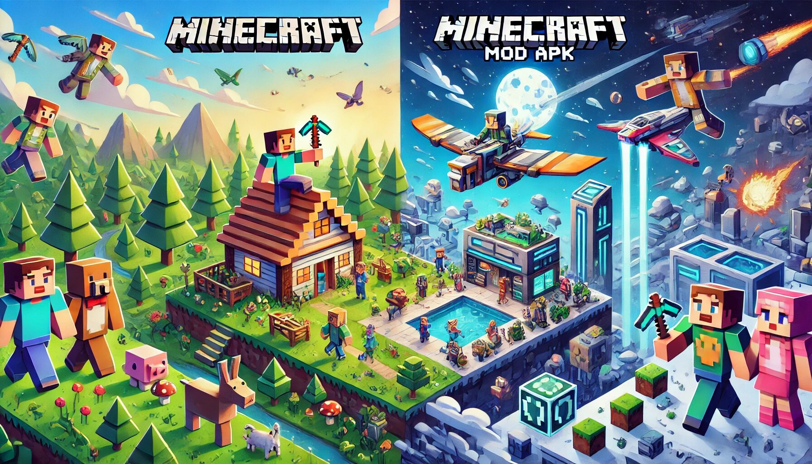

Minecraft Mod APK vs. Minecraft: A Comparison of Positives
Minecraft, a sandbox game loved by millions, has taken the gaming world by storm since its release in 2009. Over the years, it has built a massive fan base, thanks to its unique gameplay that allows players to create, explore, and survive in an open world. However, as with any popular game, there are alternative versions available, like Minecraft Mod APK. This article explores the positive aspects of both Minecraft and its Mod APK version, offering a balanced perspective to help you decide which suits your needs better.

What is Minecraft?
Minecraft is a game developed by Mojang Studios and later acquired by Microsoft. It’s available across various platforms, including PC, consoles, and mobile devices. The game has different modes, such as Survival, Creative, Adventure, and Hardcore, each offering unique challenges and experiences.
In Minecraft, players can mine resources, craft tools, and build virtually anything they can imagine, from simple homes to complex cities. The game’s charm lies in its simplicity and blocky design, which encourages creativity and exploration.
What is Minecraft Mod APK?
A Mod APK (modified APK) is an altered version of the original game, often created by independent developers. Minecraft Mod APK is a customized version of the official Minecraft Pocket Edition (PE), offering additional features, tweaks, and benefits that are not available in the official game.
While Mod APKs are not officially supported by Mojang or Microsoft, they are popular among gamers looking to enhance their gameplay experience with added flexibility.
Positive Points of Minecraft
- Endless Creativity: Minecraft’s Creative Mode is a dream for builders. The game offers a vast selection of blocks and items, allowing players to build anything from castles to rollercoasters.
- Multiplayer Fun: The official version of Minecraft allows seamless multiplayer gameplay, letting players collaborate or compete with friends worldwide.
- Regular Updates: Mojang frequently updates Minecraft, adding new content and improving performance.
- Educational Value: Minecraft teaches resource management, problem-solving, and even coding.
- Cross-Platform Play: Play with friends regardless of their device.
- Wide Community Support: A massive community offers countless tutorials and resources for learning and inspiration.
- Safety and Stability: The official version is highly secure and stable.
Positive Points of Minecraft Mod APK
- Free Access: Often free to download, offering the charm of Minecraft without the cost.
- Unlimited Resources: No grinding required! Focus on creativity with infinite blocks and tools.
- Enhanced Features: Improved graphics, custom skins, or exclusive game modes.
- Offline Mode: Perfect for players with limited internet access.
- Customization Options: Preloaded with custom skins, textures, and maps.
- Ease of Experimentation: Try mods or cheats without affecting the official game.
- No In-App Purchases: Access premium content for free.
A Balanced Perspective
Both Minecraft and Minecraft Mod APK have their unique strengths. While the official game provides a secure, community-backed experience, the Mod APK offers creative freedom and additional features that can enhance gameplay.
At the end of the day, it boils down to your preferences. Are you looking for a stable, multiplayer-friendly experience? Stick with the official Minecraft. If you’re after a customizable, feature-rich adventure, the Mod APK might be worth exploring.
A Sprinkle of Humor
Minecraft is like a reliable best friend who’s always there for you—solid, consistent, and dependable. Minecraft Mod APK, on the other hand, is like that quirky cousin who brings the coolest gadgets to family gatherings. Both are fun to hang out with, but they cater to different moods and needs.
Conclusion
Minecraft and Minecraft Mod APK both offer unique and enjoyable experiences. Whether you prefer the official game’s stability and community support or the Mod APK’s freedom and added features, you’re in for a treat either way.
So, why not try both? Experience the best of both worlds, and who knows—you might discover new ways to enjoy this legendary game! Happy crafting!